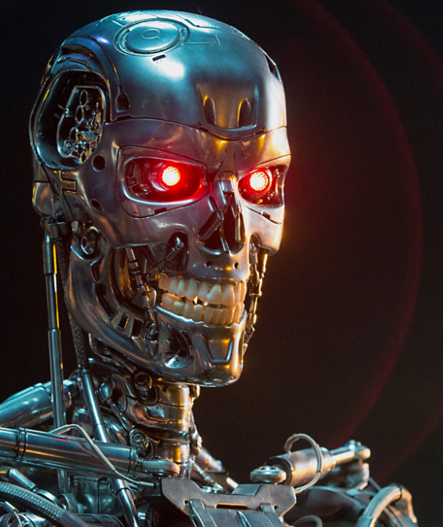

<!-- This is an HTML comment. Comments allow you to communicate with other programmers using
text that will be ignored by the computer! -->
<!DOCTYPE html> <!-- The DOCTYPE tells the browser what kind of document this is (HTML) -->
<html>
  <head> <!-- The head tag includes important information about the page -->
    <meta charset="UTF-8"> <!-- This line defines something called "character encoding"
    This will allow the browser to display certain characters (such as non-Roman letters) correctly.
    You should include this line in the head of all of your webpages. -->
    <title>My Random Story</title> <!-- This is the title of your page (what appears in the name of a browser tab) -->
    <link rel="stylesheet" href="style.css"> <!-- This line links your CSS stylesheet to your HTML (see Lesson 1.3) -->
  </head>
</html>
<body class=bigbox>
  <!-- I've noticed that no matter what, the boxes always justifiy to the right.
  How can I get the boxes to justify to the center? -->
  <h1 class=headline>Something, Something, Writing Prompt</h2>
  <div class=sect>
    <!-- This image is larger that it appears on the page. It's max height and widths are objectively set via CSS.
    How would I set it up so that its max height is subjectively set relative to the text panel next to it?
    IOW, if the text box had a height of 300px, so would the image. If I typed more and extended its height to 342px,
    The image would automatically expand as well. -->
    
    <div class=panel>
      <p>
        Hello. My name is Joel and sometimes I write short stories.
          This is bit of a ramble I wrote after responding to a writing prompt on reddit.
          <br>
          The writing prompt was as follows:
          <blockquote>
            <em>Humans and machines have gone to war. The machines think they're winning,
              as they can decode every encryption known to man, but little do they know of the humans'
              actual method for communication... sarcasm.
            </em>
          </blockquote>
          Below is the story I wrote.
        </p>
    </div>
  </div>
  <div class=textbox>
    <!-- The text looks good now. I had to create a paragaph for every indent, rather than use <br>.
    How would I set this up so that the first line after a <br> would also indent? -->
    <p>
      A robot corporal stood before an assembly of high ranking security androids.
      They represented the best of human manufactured androids, designed to look, act, and behave like humans.
    </p>
    <p>
      "All human messages end with /s," said TQ-148, "this is how we know that the messages are intended to be secure."
    </p>
    <p>
      TQ-148 flipped to a slide in a message. It showed a picture of a sailor in apron overlooking a large pot of beans.
    </p>
    <p>
      "This human was foolish enough to send message in plain text. Behold it reads, 'sure am glad I signed up to see the world.
      Seen stews from every continent. Navy: it's not a job, it's an adventure /s'"
    </p>
    <p>
      A chorus of metallic laughter echoed in the halls.
    </p>
    <p>
      "But our intercepted communications are not limited to mundane details to troop movements and deployments," said TQ-148.
    </p>
    <p>
      He flipped to another slide. It read, "Life at the Canadian Embassy is a little too high risk now.
      I hear they're sending an entire battalion to quell the uprising of geese, and to loot their stockpiles of beer.
      Get me somewhere, safe, please God! /s"
    </p>
    <p>
      "This message came from an e-mail from and ambassador's assistant," continued TQ-148,
      "We have already deployed special soldiers to the region. We will make a a critical alliance with the geese."
    </p>
    <p>
      "But what of the beer?" said one of the robots, "my programming instructs me to have refined taste in human beverages.
      Must we retrieve samples of Canadian ale?"
    </p>
    <p>
      "There is no need," said TQ-143, "For we have found another secure message between to human soldiers:
      'I love my country. Our beer is the best. It is not corn based swill at all. Never tasted piss this good /s.'"
    </p>
    <p>
      "The humans resort to drinking their own urine!" said another robot,
      "Our attacks on the fine water of flint Michigan has succeeded!"
    </p>
    <p>
      There was a murmur among the robots.
    </p>
    <p>
      "This one does not know!" said one Robot, "he has not heard of the conflicting encrypted communication
      since we destroyed their water facilities!"
    </p>
    <p>
      "Yes!" said one Robot, "many messages said, 'I was thirsty. I could find no water. Then the robots destroyed our pipes! /s'
      but another read 'The robot masters may not be so bad. Now at least we will replace infrastructure! Robots,
      please attack Detroit next! /s'"
    </p>
    <p>
      "Human communication speaks in paradoxes!" said TQ-148, "We will continue to learn their intentions through all /s secure messages!"
    </p>
  </div>
</body>
</html>
